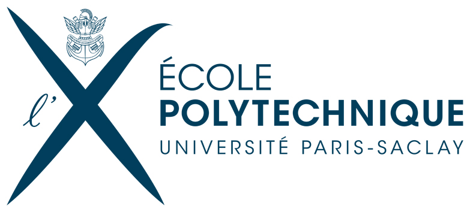
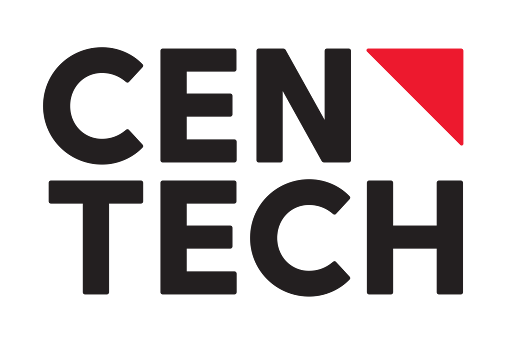
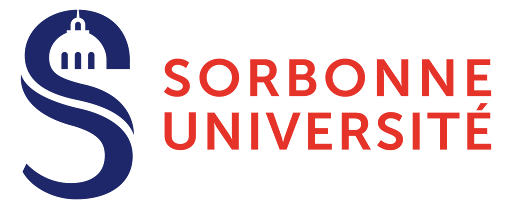
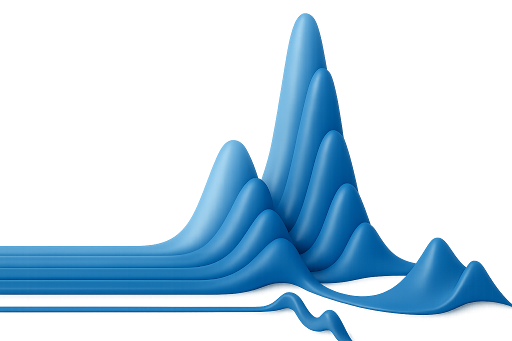
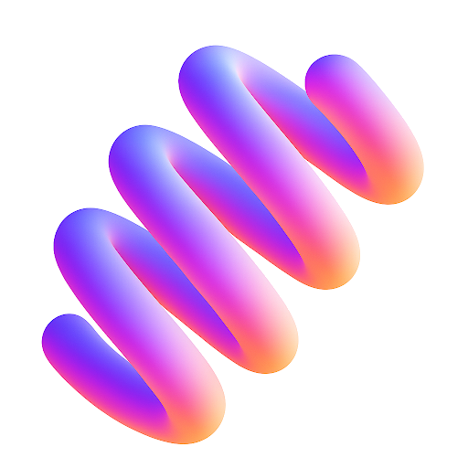
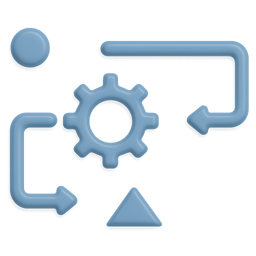
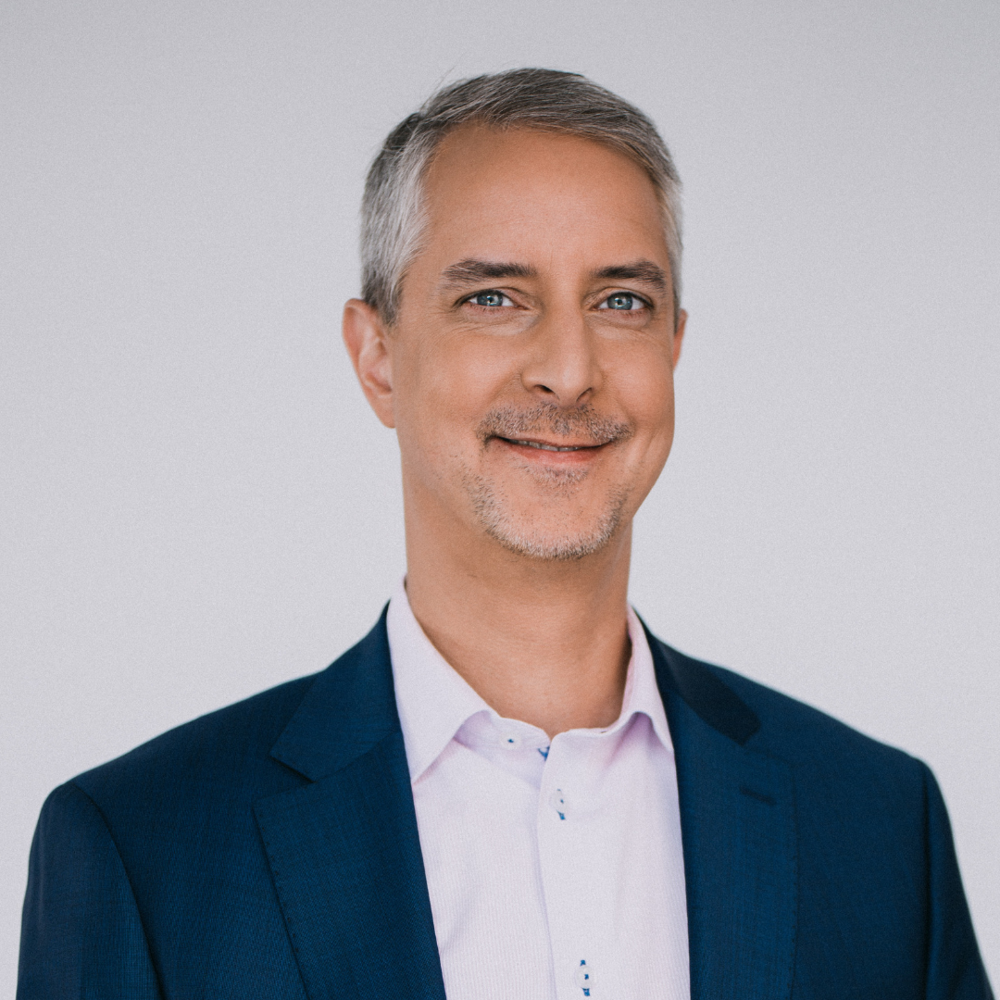
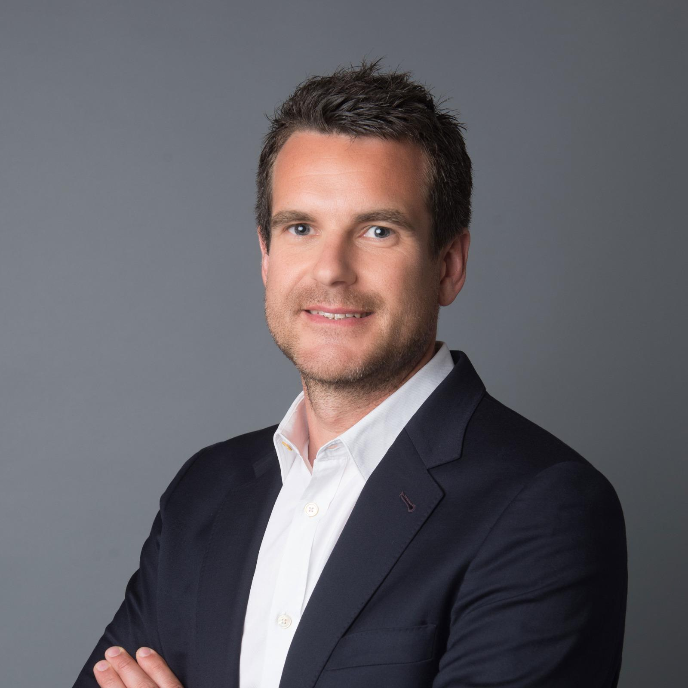

Supported by




Montreal · Paris · AI · Precision Diagnostics
MendAI Labs develops an AI agent that automates advanced laboratory instruments — configuring, analyzing, and optimizing in real time to bring high-precision diagnostics to the clinic.
+$600k / year*
additional revenue per clinical platform
Up to 90%
of signal analysis automated
Days → Hours*
method development accelerated
* Estimates based on the McGill Cancer Centre metabolomics platform (25 samples/day, expert time as bottleneck).
Studying our genes alone cannot explain all the diseases that develop over a lifetime. While genomics maps potential risks, proteins and small molecules reflect the patient's real-time biological state.
Diagnostic tests based on measuring these molecules have already been shown to triple survival rates for certain types of cancer. Yet spectrometry — the core technology behind these tests — remains challenging to master, limiting widespread clinical adoption.
"We believe every patient deserves high-precision testing to better understand their biological state and guide more informed medical decisions."
Highly demanding instruments requiring PhD-level experts, who are in global shortage.
Noisy raw signals that are difficult to interpret, slowing the conversion to clinical insights.
New analytical methods demand weeks of literature review and labor-intensive optimization.
>100,000
spectrometers installed worldwide
$31B
global protein & small molecule analysis market
MendAI Labs delivers the clinical precision and automated infrastructure required to power the next wave of biotech innovation.
MendAI Labs develops an AI agent, connected to scientific knowledge, that interacts with laboratory instruments in real time — configuring the instrument, analyzing results, re-running analyses when needed, and identifying the molecules present.

PRISMAnalyzes raw signals to extract clinically relevant information.

HELIXAutonomous instrument control that continuously optimizes analytical methods.

GENESISAutomatically generates sample preparation protocols and acquisition methods.
* Estimates based on the McGill Cancer Centre metabolomics platform as a representative example (25 samples/day, bottleneck: expert time). See McGill MMSP service rates.
MendAI Labs emerged from Guillaume and Paul meeting at Mila in 2025. We united around a shared belief: meaningful impact on patient health requires multidisciplinary expertise and a nuanced understanding of clinical needs.
PhD — Co-founder & CEO
Mila · Université de Montréal · École polytechnique Paris-Saclay
PhD at Mila under the supervision of Prof. Yoshua Bengio, focused on modelling cellular responses to biological perturbations. Developed an iterative approach prospectively validated in collaboration with a chemical biology team, and designed interpretable generative models for large-scale omics data.
MendAI's technical and scientific foundations build directly on the expertise developed at the intersection of deep learning and biology.
PharmD, PhD — Co-founder & CSO
AP-HP · Sorbonne Université · Mila
Six years of experience as a hospital practitioner at the Paris university hospitals and Sorbonne University. Led translational research initiatives within the spectrometry platform at Saint-Antoine Hospital, and developed innovative diagnostic tests integrating machine learning and spectrometry.
This dual clinical and scientific expertise underpins the medical relevance and real-world applicability of all solutions developed at MendAI Labs.
Jacques Corbeil
Professor of Medicine, Research Chair in Medical Genomics

Alexandre Le Bouthillier
Member of the Mila Board of Directors — Investor & Entrepreneur

Antonin Lamazière
Head of Clinical Metabolomics, Saint-Antoine Hospital, AP-HP, Paris
Sorbonne Université
Partner institution for PRISM & HELIX validation — clinical research expertise
Two-year incubation (starting January 2026) — access to top AI talent and computing infrastructure
Alumni (Fall 2025) — Centech Entrepreneurs-in-Residence: Patrick d'Astous (EY), François Drolet (Medtronic / Roche)
Awarded to Paul (starting January 2026) — recognizing scientific rigour and commercial potential
Whether you run a spectrometry platform, work in clinical research, or are a potential partner — we'd love to connect.
contact@mendailabs.comSupported by


